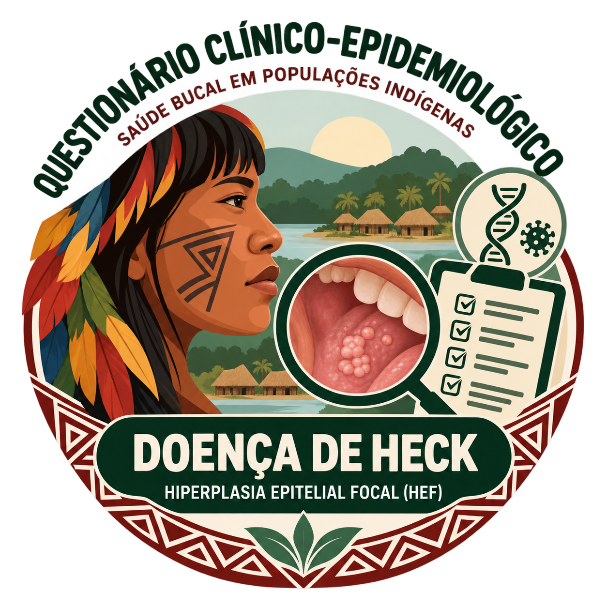

SAÚDE BUCAL • POPULAÇÕES INDÍGENAS
Cuidar começa por conhecer.
Um espaço para organizar a pesquisa sobre a doença de Heck.
QUESTIONÁRIO CLÍNICO-EPIDEMIOLÓGICOCada registro conta
Cada registro conta
uma parte da história.
Reúna informações dos participantes, histórico de saúde e achados clínicos em uma coleta organizada.
Hiperplasia epitelial focal (HEF)
Registros recentes
Acompanhe e continue suas coletas.
| PARTICIPANTE | COMUNIDADE | DATA DA COLETA | SITUAÇÃO |
|---|
▤
O primeiro registro começa aqui
Inicie uma coleta para incluir um participante na pesquisa.
◉ Dados de pesquisa • Use códigos para identificar os participantes.
QUESTIONÁRIO INTEGRADO
Nova coleta
Preencha as etapas. Você pode salvar e continuar depois.